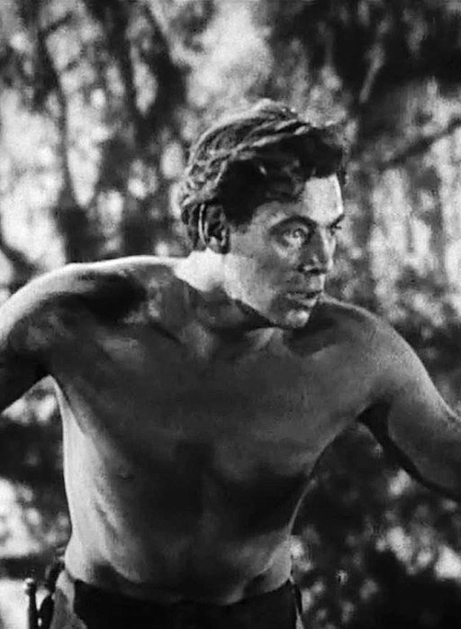
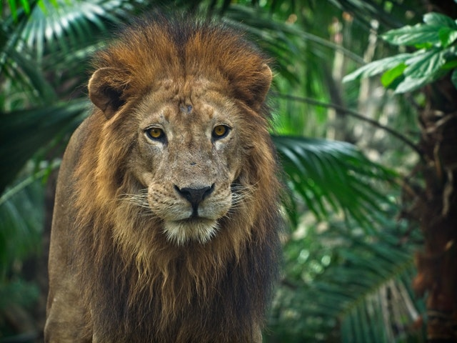

Chapter 4
He eventually discovers the secret to the wooden lock and enters his former home. then he comes across an alphabet picture book. Many of the pictures inside are of "faces similar to his own." Underneath the pictures are letters and words, which he thinks are bugs.
He works through the book and a few others with painstaking slowness, learning one word at a time. At 12 years of age he teaches himself how to write, and by 15 he can understand most of the words in the Claytons' small collection of children's books. He finally understands the purpose of letters and words by the time he is 17, and he can easily read and understand each word in the primer. He has growned stronger, he is as fast as a leopard and as strong as a jaguar
Sabor stalks the apes through the jungle, and Tarzan wonders if he could kill her. He could use her pelt to make clothing like that worn by the humans in the alphabet primer. At first he thinks clothes must be a symbol of superiority, but then he figures out their real purpose is to keep warm after a storm rips through the jungle that night.
After learning the limitations of his methods in a bout with a wild boar , Tarzan perches in a tree and waits for big game to cross his path. The first to come along is Sabor. He throws the noose around her neck and pulls it tight before tying his end to a tree trunk.
Click to help Tarzan defeat Sabor
He tries to pull her up the tree but she's too heavy . After several attempts to reach Tarzan in the tree, Sabor realizes she can bite through the rope. She does, and a very disappointed Tarzan screams at her. Sabor paces under the tree for hours until Tarzan swings away through the treetops back to his tribe. He brags about his adventure, and Kala is immensely proud.
Leopard

COMMON NAME: Leopard
SCIENTIFIC NAME: Panthera pardus
TYPE: Mammals
DIET: Carnivore
SIZE: Head and body: 4.25 to 6.25 feet; tail: 3.5 to 4.5 feet
WEIGHT: 66 to 176 pounds
Leopards are graceful and powerful big cats closely related to lions, tigers, and jaguars. They live in sub-Saharan Africa, northeast Africa, Central Asia, India, and China. However, many of their populations are endangered, especially outside of Africa.
The leopard is so strong and comfortable in trees that it often hauls its kills into the branches. By dragging the bodies of large animals aloft it hopes to keep them safe from scavengers such as hyenas. Leopards can also hunt from trees, where their spotted coats allow them to blend with the leaves until they spring with a deadly pounce. These nocturnal predators also stalk antelope, deer, and pigs by stealthy movements in the tall grass. When human settlements are present, leopards often attack dogs and, occasionally, people.
Leopards are strong swimmers and very much at home in the water, where they sometimes eat fish or crabs.
Jaguar
COMMON NAME: Jaguar
SCIENTIFIC NAME: Panthera onca
TYPE: Mammals
DIET: Carnivore
AVERAGE LIFE SPAN IN THE WILD: 12 to 15 years
SIZE: Head and body: 5 to 6 feet; tail: 27.5 to 36 inches
WEIGHT: 100 to 250 pounds
Jaguars are the largest of South America's big cats. They once roamed from the southern tip of that continent north to the region surrounding the U.S.-Mexico border. Today significant numbers of jaguars are found only in remote regions of South and Central America—particularly in the Amazon Basin.
These beautiful and powerful beasts were prominent in ancient Native American cultures. In some traditions the Jaguar God of the Night was the formidable lord of the underworld. The name jaguar is derived from the Native American word yaguar, which means “he who kills with one leap.”
Unlike many other cats, jaguars do not avoid water; in fact, they are quite good swimmers. Rivers provide prey in the form of fish, turtles, or caimans—small, alligatorlike animals. Jaguars also eat larger animals such as deer, peccaries, capybaras, and tapirs. They sometimes climb trees to prepare an ambush, killing their prey with one powerful bite.
Boar
The wild boar—which is sometimes called the European wild boar—is the largest of the wild pigs and is native to forests ranging from western and northern Europe and North Africa to India, the Andaman Islands, and China.
It is bristly haired, grizzled, blackish or brown in colour, and stands up to 90 cm (35 inches) tall at the shoulder. Except for old males, which are solitary, wild boars live in groups. The animals are swift, nocturnal, and omnivorous and are good swimmers. They possess sharp tusks, and, although they are normally unaggressive, they can be dangerous.
From earliest times, because of its great strength, speed, and ferocity, the wild boar has been one of the favourite beasts of the chase. In some parts of Europe and India it is still hunted with dogs, but the spear has mostly been replaced with the gun.
Help Tarzan defeat Sabor
Repeatedly press W and S
Gorillas stick to a mainly vegetarian diet, feeding on stems, bamboo shoots and fruits. Western lowland gorillas, however, also have an appetite for termites and ants, and break open termite nests to eat the larvae.
Lion pelt worth up to 2500$
Lion weight from 265 to 420 pounds
Lion have bite force of 600psi, at the top 10 animals with highest bite force